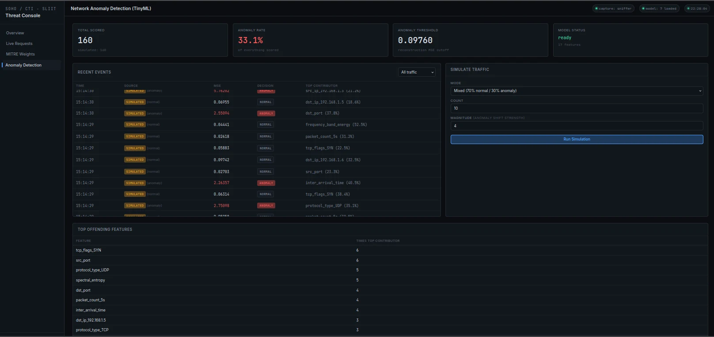

- M2
Anomaly Detection
TinyML multi-layer network anomaly detection
Dilshara N.P.G.R. · IT22064790 · Member
M2 is a standalone TinyML anomaly-detection microservice. It receives windowed statistical and spectral (FFT) feature vectors from M1 over HTTP and returns the reconstruction error, the threshold, an anomaly flag and the features that contributed most, shown on M1's CTI dashboard. A second layer, a DeBERTa-v2 model fine-tuned with LoRA, detects seven types of personal information in e-mail text.
Research question
Signature-based tools and threat feeds only recognise attacks that have already been described, and nothing at a SOHO gateway notices personal data leaving by e-mail. M2 asks how lightweight, explainable models can detect previously unseen network behaviour and e-mail PII exposure in a way a non-expert can understand.
- Can an autoencoder trained only on normal traffic, with its threshold at the 95th percentile of validation reconstruction error, detect anomalous events with an F1-score of at least 0.90 while keeping the false-positive rate near 5%?
- Does reporting per-feature reconstruction error give an administrator a meaningful explanation of why an event was flagged?
- Can a DeBERTa-v2 model fine-tuned with LoRA detect PII in e-mail text with an F5-score of at least 0.90 while training only a small fraction of its parameters?
- Can both detection layers be served with acceptable latency (at most 500 ms per event) and memory use (at most 512 MB) for SOHO deployment?
What it does
-
01
TinyML autoencoder
A lightweight autoencoder, built in the anomaly-detection notebook, scores how far traffic deviates from normal.
-
02
Feature input
Windowed statistical and FFT feature vectors from M1's live scorer.
-
03
Standalone microservice
monitor.py serves HTTP scoring, health-check and simulation endpoints, with no dependency on M1's code.
Pipeline
-
01
Receive
Windowed statistical and FFT feature vectors arrive from M1 over HTTP.
-
02
Infer
The TinyML autoencoder in monitor.py scores the window.
-
03
Return
The anomaly score is returned to M1.
-
04
Display
The score is shown on M1's CTI dashboard.

